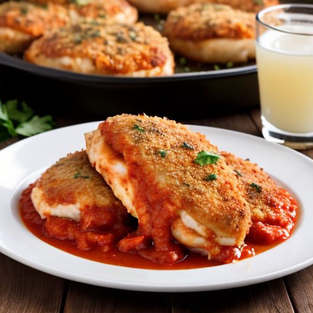

Chicken Parmesan Recipe

A classic Italian-American dish with crispy breaded chicken topped with marinara and melted cheese!
Chicken Parmesan is a beloved dish featuring breaded and fried chicken cutlets, smothered in rich marinara sauce and topped with melted mozzarella and Parmesan cheese. It’s crispy, cheesy, and packed with flavor—perfect for serving over pasta or with a side of garlic bread.
Ingredients
- For the Chicken:
- 2 large boneless, skinless chicken breasts
- 1 cup all-purpose flour
- 2 large eggs
- 1 cup breadcrumbs (Italian-style preferred)
- ½ cup grated Parmesan cheese
- ½ tsp salt
- ½ tsp black pepper
- 1 tsp garlic powder
- ½ tsp paprika
- ¼ cup olive oil (for frying)
- For the Toppings:
- 1 ½ cups marinara sauce
- 1 ½ cups shredded mozzarella cheese
- ¼ cup grated Parmesan cheese
- 1 tbsp chopped fresh basil (optional)
- Other Ingredients:
- Spaghetti or preferred pasta (optional, for serving)
Instructions
- Prepare the Chicken
- Preheat oven to 375°F (190°C).
- Slice each chicken breast in half horizontally to create thin cutlets.
- Season with salt, pepper, garlic powder, and paprika.
- Set up a breading station: flour in one bowl, beaten eggs in another, and a mixture of breadcrumbs and Parmesan cheese in a third.
- Dredge each chicken cutlet in flour, then dip in egg, and coat in breadcrumb mixture.
- Cook the Chicken
- Heat olive oil in a skillet over medium heat.
- Fry each breaded chicken cutlet for 2-3 minutes per side, until golden brown. Transfer to a baking dish.
- Assemble & Bake
- Spoon marinara sauce over each chicken cutlet.
- Top with shredded mozzarella and Parmesan cheese.
- Bake uncovered for 15-20 minutes, until cheese is melted and bubbly.
- Garnish with fresh basil if desired.
- Serve
- Let rest for 5 minutes before serving.
- Serve over spaghetti or alongside a salad and garlic bread.
- Enjoy!
Home